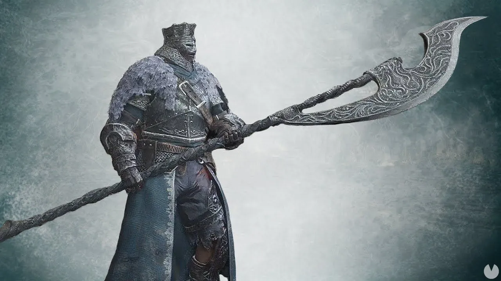
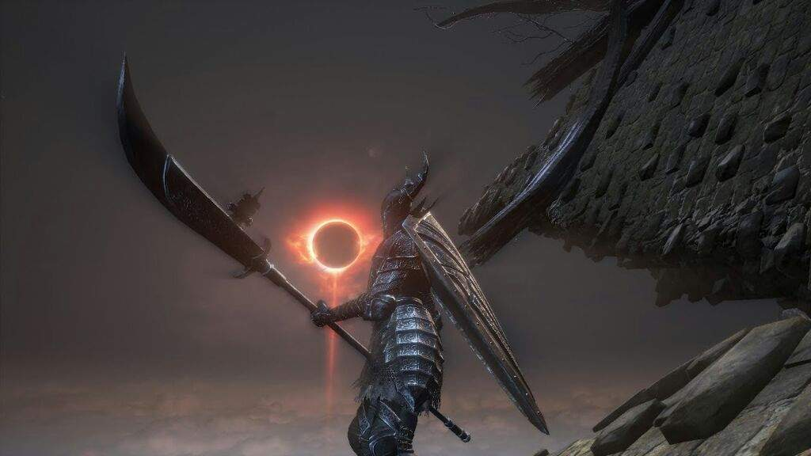

2.- Lanza de Caballero Anillado
Descripcion
Lanza negra de los Caballeros Anillados. Las armas de los primeros hombres se forjaron en el Abismo y traicionan ligeramente la vida. Por esta razón, los dioses vertieron un sello de fuego sobre estas lanzas y quienes las poseían.Habilidad: Ascua, Asesta una estocada con la lanza erosionada y observa cómo se restablece su brillo antiguo y se prende una llama efímera cuyo fulgor perdura.
Disponibilidad
Se encuentra en La Ciudad Anillada. Desde la segunda o la tercera hoguera, en el gran sendero de escaleras lleno de Caballeros de la Legión de Harald, justo cuando el jugador se acerca al pantano y antes del último tramo de escaleras, hay un camino a la derecha con varios clérigos no muertos (regulares y que infligen maldición), que conducen a un pequeño jardín con un Caballero Anillado. El arma se encuentra en un cadáver a la derecha.Galeria  
3.- Gran garrote
Descripcion
Rama de árbol gigante convertida en garrote de madera. Machaca a los enemigos si se les golpea en la cabeza.Este ataque con salto es muy habitual con los garrotes, y este garrote gigante no es una excepción.